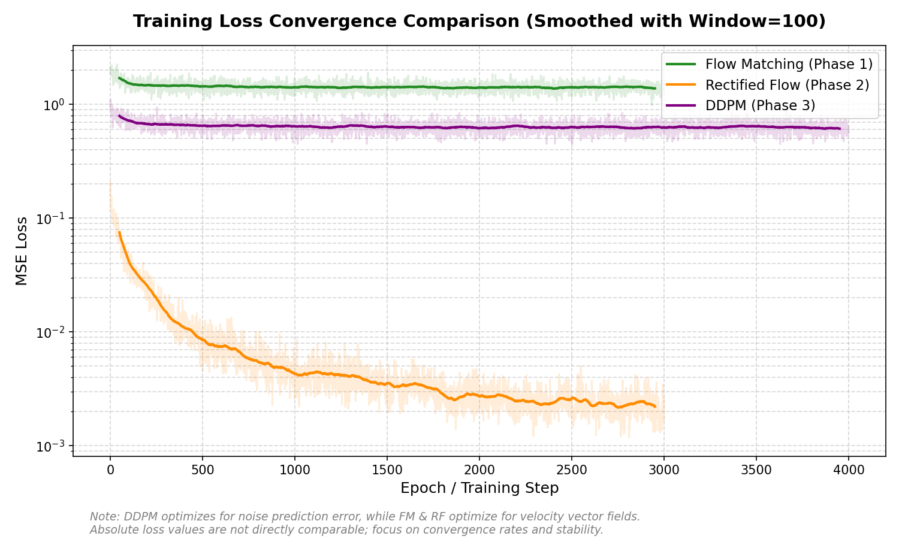
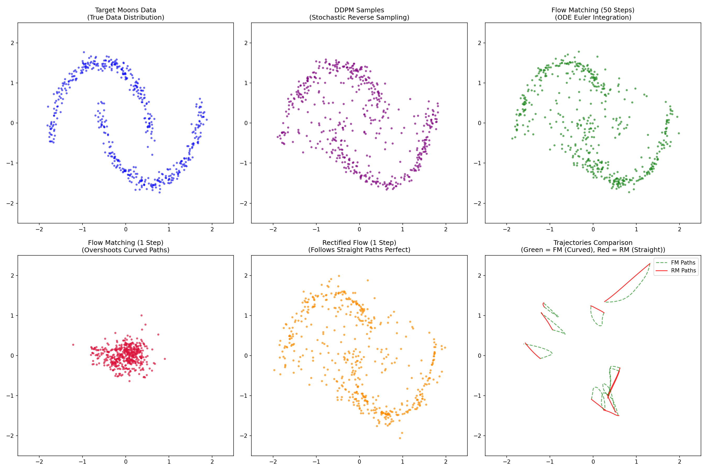

DDPM, Flow Matching & Rectified Flow
A comparative benchmarking of stochastic diffusion vs. deterministic ODE-based generative models.
Executive Summary
Generative modeling is undergoing a paradigm shift from traditional stochastic diffusion paths (e.g. DDPM) towards deterministic, velocity-field-based Ordinary Differential Equations (ODEs) like Flow Matching and Rectified Flow. This dashboard offers interactive visualization and quantitative evaluation metrics of these three paradigms trained on the 2D Two Moons Point Cloud and the 64x64 CelebA Faces Dataset, compiled on a physical NVIDIA RTX A5000 Laptop GPU.
Mathematical Frameworks
Each algorithm constructs a path mapping simple noise to the structured target data distribution, but they optimize different fields and trajectories.
Denoising Diffusion Probabilistic Models (DDPM)
Generative sampling is modeled as the reverse of a stochastic noising process over discrete steps.
Flow Matching (FM)
Generative sampling is modeled as integrating a deterministic velocity field representing the average path.
Rectified Flow (RM / 2-RF)
Trajectories are straightened by retraining the velocity network on deterministic pairs generated by Flow Matching.
Experimental Benchmarking
Dataset: 2D Two Moons
A toy continuous dataset used to analyze path straightness and model stability in 2D coordinate space.
Run Configuration
Evaluation Metrics
| Method | NFE | Time (ms) | Chamfer | FID Equiv | Straightness |
|---|
Training Loss Convergence

Qualitative Samples & Paths

Hardware Acceleration & Mixed Precision
Training visual trajectories and evaluating their physics on a GPU requires optimizations for memory management and exact timing checks.
Automatic Mixed Precision (AMP)
To optimize training throughput on the NVIDIA RTX A5000 Laptop GPU, we integrated PyTorch's mixed precision utilities:
torch.cuda.amp.autocast(): Dynamically casts compatible operations (like convolutions) to 16-bit brain float/half precision formats while leaving loss computation in standard 32-bit float.torch.cuda.amp.GradScaler: Automatically scales loss values prior to backpropagation, preventing numerical gradient underflow (grad rounding to zero) and automatically unscaling before weights update.
Precise Latency Benchmarking
GPU operations run asynchronously relative to the CPU, meaning benchmark timers require hardware block synchronization to reflect true speeds:
# Correct GPU timing framework
torch.cuda.synchronize()
start_time = time.time()
# Sampling operations
samples = trainer.sample(N)
torch.cuda.synchronize()
latency_ms = (time.time() - start_time) * 1000Without torch.cuda.synchronize(), CPU timers yield inaccurate results like 0.13 ms per image, while the physical synchronization shows 1.00 ms.
Evaluation Conclusions & Insights
Robust Geometry, High Complexity
DDPM maintains the lowest edge-alignment distance (Chamfer Distance of 0.7711 on CelebA). It performs well at capturing fine structural edges, but the stochastic reverse diffusion process is slow and requires multiple steps ($50+$), resulting in high latency.
Best Distribution Mapping, Curved Paths
FM achieves the best FID equivalent (3.6626 at 100 epochs on CelebA), showing excellent early mapping of the overall data distribution. However, because paths are curved ($\sim 2.36$ straightness), 1-step sampling is unusable due to severe overshooting, requiring at least 50 steps.
Millisecond 1-Step Generation, Straight Paths
RF successfully straightens trajectories (straightness score of **$0.9993$** on CelebA and **$1.004$** on Moons). This enables **1-step analytical generation** (latency of only 0.98 ms per image), providing a **55x speedup** with minimal loss in visual quality (FID of 8.98 vs 3.66 for 50-step FM).
References
- Instructor: Ivan Dokmanić, Term: Spring 2026. Course Project Guide: Generative Modeling: Diffusion, Flow Matching, and Stochastic Interpolants. Master's Course in Generative Machine Learning, May 2026.
- Jonathan Ho, Ajay Jain, & Pieter Abbeel (2020). Denoising Diffusion Probabilistic Models. Advances in Neural Information Processing Systems (NeurIPS 2020), 33, 6840-6851.
- Yaron Lipman, Ricky T. Q. Chen, Heli Ben-Hamu, Maximilian Nicklas, & Mattese Le (2022). Flow Matching for Generative Modeling. arXiv preprint arXiv:2210.02747.
- Qiang Liu, Lemeng Ji, & Jiaming Deng (2022). Flow Straight and Fast: Learning to Generate and Transfer Data with Rectified Flow. arXiv preprint arXiv:2209.03003.
- Michael S. Albergo, Nicholas M. Boffi, & Eric Vanden-Eijnden (2023). Stochastic Interpolants: A Unifying Framework for Flows and Diffusions. arXiv preprint arXiv:2303.08797.
- Olaf Ronneberger, Philipp Fischer, & Thomas Brox (2015). U-Net: Convolutional Networks for Biomedical Image Segmentation. Medical Image Computing and Computer-Assisted Intervention (MICCAI 2015).
- Diederik P. Kingma & Jimmy Ba (2014). Adam: A Method for Stochastic Optimization. International Conference on Learning Representations (ICLR 2015).